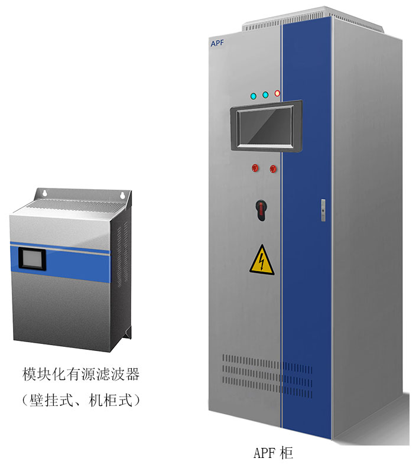
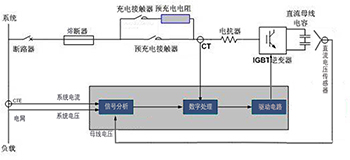
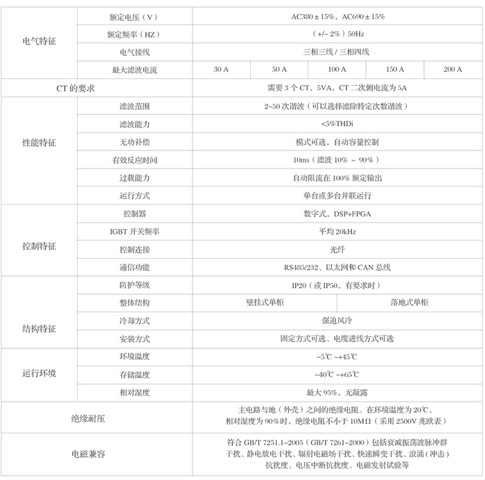
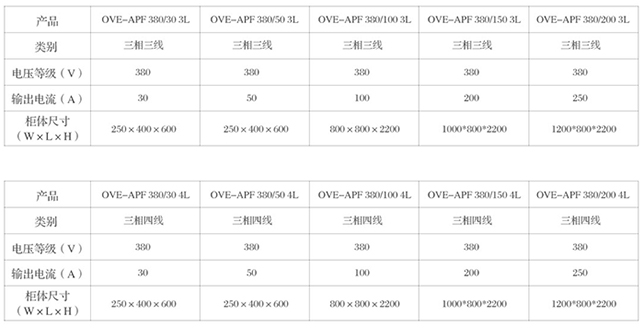
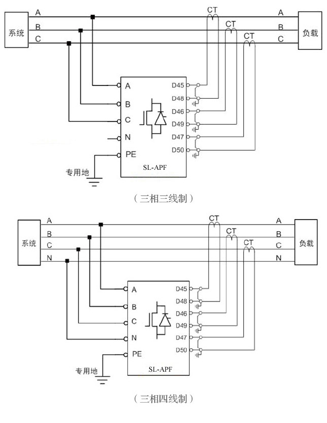

SL-APF 有源滤波装置
产品简介
滤波原理
SL-APF通过外部互感器实时采集电流信号，通过内部检测电路分离出其中的谐波部分，通过IGBT逆变出与系统中的谐波大小相等相位相反的补偿电流，实现滤除谐波的功能。
无功补偿原理
可以通过参数设置，使SL-APF在滤波的同时进行无功补偿。SL-APF根据检测系统的无功需求，通过内部IGBT逆变出容性或感性的基波电流，实现动态无功补偿。
SL-APF内部控制原理
断路器合闸后，SL-APF首先将充电接触器合闸通过预充电电阻对直流母线的电容器充电，即为防止上电后对直流母线电容器的瞬间冲击，8秒钟后，当母线电压Vdc达到额定值后，预充电接触器闭合。然后SL-APF通过斩波升压控制直流母线电容电压稳定在目标值。

SL-APF通过外部CT采集电流信号送至谐波检测模块，该模块将基波与谐波分离，将谐波成分送至检测模块，该模块将采集到的负载谐波成分和SL-APF输出补偿电流比较，得到的差值作为实时补偿信号输出到驱动电路，出发IGBT逆变器将补偿电流注入到电网中，实现滤除谐波功能。
产品特征
l谐波滤除效率高，可以对从2-25次谐波之间进行有选择性的滤除或者全部的谐波补偿。
lDSP+FPGA全数字控制，高速检测和运算，对于变化较为频繁的谐波能够实行快速的补偿。
l可根据负荷变化自动限流，不存在过载现象。
l可以只滤波或同时滤波和补偿无功。
l操作简单，维护方便，并联安装方式，可实现多台并联运行。
l按照配电结构，可选择集中补偿、分散补偿。
l采用10.2英寸高清晰触摸屏，友好人机界面，提供完整现场信息及历史记录信息。
l具备输出过电流、直流侧过电压、直流侧欠电压、交流侧过电流、交流侧过电压、IGBT死区保护以及IGBT综合保护等多种保护功能，确保在系统或设备出现运行异常时，可靠地使设备退出运行或保护系统及设备。
l有效消除零序谐波及其产生的中性线电流。
l采用光纤对功率组件与控制回路进行隔离，安全可靠。
l电缆可从装置柜体顶部或底部进入，使得安装更加灵活。
技术规格/参数


现场安装与链接

选型与安装
选型时无须测量系统电源阻抗、分析负载谐波的频谱。只要依据已知需要补偿的谐波电流总有效值（IH）大小，选用一款输出补偿电流大于该值的产品即可。一般来说，推荐选用有源滤波器补偿电流比IH大20%左右。例如，已知IH为80A，那么可选100A级的有源滤波器。